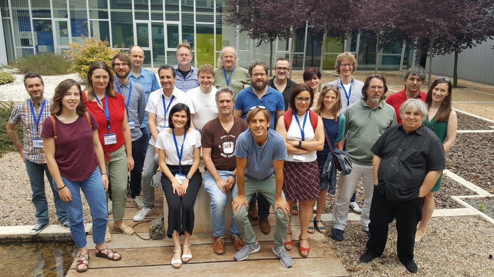

A few weeks ago, the Prêt-à-LLOD project celebrated its second face to face meeting in Zaragoza, hosted by the Aragon Institute for Engineering Research. It was two and a half days of intensive and very productive meeting, but with room also for some table football and "tapas crawl" ;-)